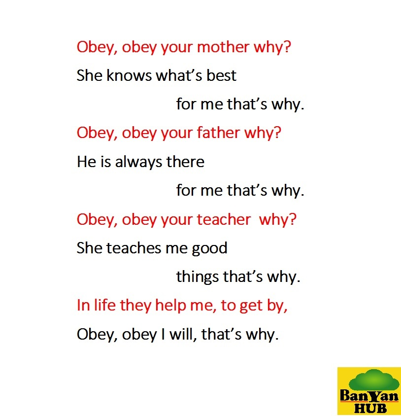

Obie,
The Obedient Dog
About Obie:
Obie is a one-and-a-half year old pet dog who lives on the farm owned by Riya’s granny. He loves to play with Riya and other animals on the farm and the gardens around the house.
Moral Story:
It was a warm and pleasant evening at around 4pm. Granny was in the kitchen preparing some snacks for the evening. Riya and Obie who were playing in another room caught a wonderful smell coming from the kitchen. So they went into the kitchen to check. When they entered the kitchen, they saw granny take out some freshly baked chocolate chip cookies from the oven and placing them on the dining table to cool them.
Riya and Obie immediately reached for the cookies as they looked very delicious. But, Granny stopped them. She said to them that the cookies are still very hot and told them to wait till she got back from the garden. She then went into the garden to collect some vegetables and herbs for preparing the dinner.
Riya and Obie sat close to the tray of cookies with their eyes fixed on the delicious looking cookies and waited for granny to return from the garden. As time went by, 5mins became 10mins and 10 became 15. Riya was starting to get tired of waiting. Riya decided to disobey granny and went to grab and eat the cookies.
Just as she reached for the cookies, Obie caught hold of her skirt and tried to pull her back away from the cookies. But, Riya pushed Obie away and grabbed the cookies and put them into her mouth. The moment she bit into the cookies, her tongue got burnt and she started to scream in pain. She did not realize that the cookies were still hot on the inside.
Granny heard Riya scream and rushed into the kitchen. She soon realized what Riya had done. She poured some cold milk into a glass and gave it to Riya to help cool her burnt tongue.
After a while when the cookies had cooled down, Granny gave some cookies to Riya and Obie. Obie enjoyed his chocolate chip cookies which tasted really good, but Riya could not enjoy the yummy and delicious chocolate chip cookies that day, as she could not feel the taste because of her burnt tongue. She now realized that if she had only obeyed her granny and waited a little longer she could have enjoyed the yummy cookies along with Obie who was obedient to Granny.
Story Narration – Audio.
Obie Rhyme – 01
Obie Rhyme 01 – Tune:
Obie Rhyme – 02
Obie Rhyme 02 – Tune:
Why Obey - Rhyme
Dog Sounds
Barking Sound Effect:
Dogs use barking sound to communicate various things. They bark for various reasons which range from alerting the owners about a stranger or another dog to just drawing attention of those around.
Growling Sound Effect:
Dogs growl when they want to defend their territory or possession from strangers or from other dogs. It is a warning and an indication of their aggression. Some dogs also growl while they are playing aggressively.
Howling Sound Effect:
Dogs howl when they are in pain or sick, and when they are alone and feel separated from their pack members or owners. They howl to announce their presence and to seek attention.
Snarling Sound Effect:
Dogs snarl when they are threatened. The snarling sound with curled up lips and the display of teeth is an indication of warning suggesting that the dog is ready to bite.
Whining Sound Effect:
Dogs make the whining sound when they are excited or in response to stressful situations or when they are in pain. Some dogs whine in the presence of their owners in order to get attention, rewards or desired objects.
Angry Dog – Barking & Growling Sound Effect:
Dogs often use a combination of these sound effects, such as barking and growling.